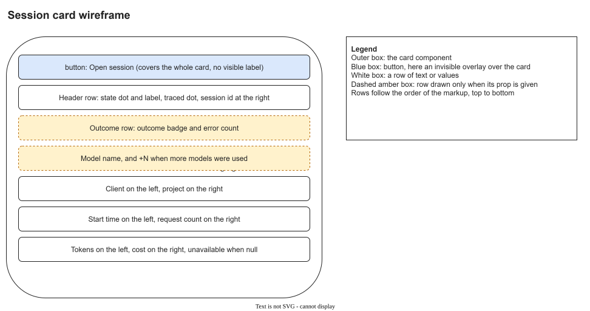

draft draft inferred covers web/src/components/*
Session card wireframe
This wireframe shows how one session appears as a card on narrow screens. It lets a designer check the order of the rows and see which rows are optional. A developer can compare it with a table row of the same session.
What the diagram shows
The card is one bordered box that highlights on hover, and an invisible button stretched over it opens the session through the function the page passes in. web/src/components/session.tsx:117-205 web/src/components/session.tsx:136-141
The header row holds the cost state dot and label and the session id at the right, and a traced dot appears only when the traced prop is given. web/src/components/session.tsx:143-143 web/src/components/session.tsx:139-139
The outcome row, with the outcome badge and the error count, is drawn only when an outcome is given, and the error count only when that count is given. web/src/components/session.tsx:159-173
The model row shows the model name and a plus count when more than one model was used. web/src/components/session.tsx:175-180
The next rows show client and project, then start time and request count. web/src/components/session.tsx:183-184 web/src/components/session.tsx:187-188
The last row shows the token label and the cost, and each falls back to the word unavailable when it is null. web/src/components/session.tsx:192-200
Capability and related functionality
The wireframe realises the compact form of a session on the sessions page. Its states are covered in Offline and error handling flow and its place in the tree in Dashboard component composition. The explanation is in Web UI components Overview. The matching table view is described in Web Overview.
Session card wireframe

Code references
| Code | What it shows |
|---|---|
web/src/components/session.tsx:117-205 |
Card component |
web/src/components/session.tsx:136-141 |
Overlay button |
web/src/components/session.tsx:159-173 |
Outcome row condition |
web/src/components/session.tsx:183-184 |
Client and project row |
web/src/components/session.tsx:192-200 |
Tokens and cost row |